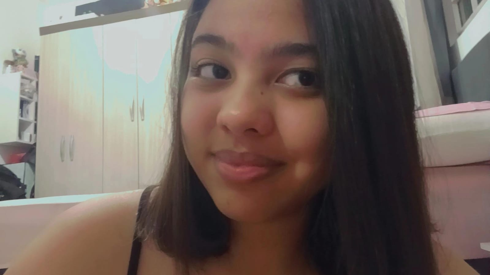

Olá! Meu nome é Lara Yasmim Bruni.
Atualmente sou estudante de Desenvolvimento de Sistemas na extenção da ETEC no Macedo, onde estou aprendendo a utilizar ferramentas tecnológicas e lógica de programação.
Embora eu esteja estudando tecnologia, meu grande sonho e objetivo de carreira é atuar na área da saúde. Desejo ser Enfermeira Neonatal, cuidando com dedicação e carinho dos recém-nascidos e suas famílias.
Acredito que o conhecimento em sistemas que estou adquirindo na ETEC será um diferencial para lidar com as tecnologias modernas usadas em hospitais e UTIs neonatais.